第六章 E-R模型
E-R Model
数据库设计
-
设计阶段(Design Phase)
-
Initial Phase: 调查明确用户需要存储什么数据, 以及这些数据如何被使用.
- Second Phase: 将需求转化为 概念模式(Conceptual Schema). 应用逻辑框架(如: 关系模型或 E-R 模型), 将收集到的数据转化为一种抽象结构
-
Final Phase: 从抽象模型向具体实施阶段移动. 主要包括以下内容
- 逻辑设计: 决定 DB 模式
- 业务决策: 应当在数据库中记录哪些属性?
- 计算机科学决策: 应该拥有哪些关系模式? 如何将属性分布在不同的关系模式中?
- 物理设计: 决定数据库的物理布局(数据在物理存储设备, 如硬盘, SSD 上的实际存放和组织)
-
设计替代方案(Design Alternatives)
设计时要确保避免两个主要陷阱:
- 冗余(Redundancy): 不好的设计会导致信息重复, 可能导致各副本之间的数据不一致
-
不完整性(Incompleteness): 不好的设计使得某些方面难以建模
-
设计方法(Design Approaches)
-
实体关系模型(Entity Relationship Model / E-R Model)
- 规范化理论(Normalization Theory)
E-R 模型概述
E-R 模型的组成部分
-
实体集(Entity Sets)
-
实体: 一个客观对象, 可以是抽象的, 也可以是具体的. 例如: 某个人, 某个事件
- 属性: 实体通过一组属性来表示, 即该实体集所有成员都具有的描述性特征
- 主键: 实体集属性的一个子集, 用来唯一标识集合中的每一个成员
-
实体集: 具有相同类型且共享相同属性的实体集合
-
关系集(Relationship Sets)
-
关系: 指多个实体之间的关联. 比如: 学生 A 和老师 B 之间通过 advisor 关系关联
- 关系集: 指两个及以上的实体集之间的关系. 本质就是将不同实体集中的记录连线起来.
- 关系集的属性: 属性既可以属于实体, 也可以属于关系. 比如: 学生和老师的 advisor 关系就可以拥有一个 date, 用来记录开始指导的时间
- 角色(Roles): 当一个关系集连接同一个实体集时, 角色标记是必不可少的, 这在处理复杂层级关系时很重要.
-
关系集的度(Degree): 即参与到某个关系集的实体集的数量. 其中, 绝大多数都是二元关系, 当然也有三元关系. 比如: 老师, 学生, 项目这个三元关系
-
属性(Attributes)
-
属性: 描述实体集所有成员的特性
-
域: 属性允许取值的范围/集合
- 属性类型:
- 简单属性与复合属性(Simple and Composite)
- 复合属性允许将一个大属性进一步划分为子属性: name-> first_name, middle_initial, last_name
- 这样做的好处是检索方便. 如果想要查找所有住在某个城市的人, 只要查询对应的 city 字段, 不需要在长字符串地址中进行模糊匹配
- 单值与多值属性(Single-valued and Multivalues): 比如一个人可以有多个电话号码
- 派生属性(Derived): 可以通过其他属性计算得出. 例如, 有了出生日期就可以算出年龄
- 简单属性与复合属性(Simple and Composite)
- 属性类型:
-
映射基数约束(Mapping Cardinality Constraints)
即数量限制. 用来表达通过一个关系集, 一个实体可以和多少个其他实体相关联, 主要用于描述二元关系
- **四种类型**
- - **one to one:**A 中的一个实体最多关联 B 中的一个实体, 反之亦然.
- - **one to many:**A 中的一个实体可关联 B 中的多个实体, 但 B 中的一个实体最多关联 A 中的一个.
- - **many to one:**与 "一对多" 逻辑相反.
- - many to many: A 中的一个可关联 B 中的多个, B 中的一个也可关联 A 中的多个.
图例说明:
{ width="33%" }
{ width="33%" }
- 三元关系上的基数约束
- - Q: 在三元关系中, 使用箭头会产生歧义.
- - A: 解决方案: 最多只允许出现一个箭头. 对于指向的一个实体集 A, 则对于另外两个实体的组合, 则最多对应 A 中的一个实体.
- 参与约束(Total/Partial Participation)
实体集参与到关系集的一种联系
- - **完全参与(Total Participation):**指实体集中的每一个实体都至少参与了一次该关系. 例如: 每个学生都必须有一位导师
- - **部分参与:**指实体集中的某些实体可能不参与任何该关系. 例如: 并非所有老师都必须担任导师
-
主键(Primary Key)
-
实体集中的主键
- 唯一性
-
关系集中的主键
-
- 由所关联的所有实体集的主键组成
-
- \(R的主键 = E_1主键 + E_2主键 + ... + E_n主键 + 关系自身的属性(如果存在)\)
-
- 二元关系主键的选择
-
- 多对多: 两个关联的实体集的主键合起来 作为关系的主键
-
- 一对多/多对一: 多的那一侧实体的主键 作为关系的主键
-
- 一对一: 任意一方的主键 都可以作为关系集的主键
-
-
弱实体集(Weak Entity Sets)
- 定义: 有些实体自身没有足够的主键, 必须依赖于另一个 "强实体". 它们类似于从属关系, 比如: 订单明细依赖于订单号, 但是没有订单, 明细就没有了存在的意义
注:
- 在数据库的物理实现中, 弱实体集确实是通过外键约束实现的
- 有所区别的是: 普通的外键约束只是一个属性, 可以为 NULL, 即便删除掉也不会影响原本的实体, 它还在那; 对于弱实体集中的外键, 它是主键的一部分, 是不能为 NULL 的, 如果没有了它, 那么弱实体也就没有了意义.
-
冗余: 如果将某个属性添加到弱实体集中, 那么它就有了唯一辨识的能力; 如果不添加, 又显得关系不清晰;
-
解决方式: 使用一种特殊关系, 表示弱实体集的存在依赖于另一个实体的实体集, 后者被称为标识实体(Identifying Entity). 通过标识实体, 连同弱实体的 分辨符(discriminator) 来作为主键.
除了分辨符, 弱实体集还可能有其他的没有唯一性作用的属性
-
-
强实体集(Strong Entity Set)
-
- 定义: 非弱实体集的实体集
-
- 关联弱实体集和标识实体集之间的关系叫标识关系
-
-
基础 E-R 图的表示方法
-
实体集
-
矩形框(Rectangles)表示 实体集
- 属性列在矩形框内
-
下划线表示该属性为 主键
-
关系集
-
菱形(Diamonds)表示 关系集
-
关系集连接实体集, 用来表示关联
-
(如果有)关系集的属性, 使用 虚线与菱形连接. 这些属性可以写在同一个矩形框中, 也可以单独写成一个小矩形
-
一个关系集可以连接同一个实体集(即自关联). 这种情况下, 实体集中的每个参与者在关系中都扮演特定的角色
- 例如:
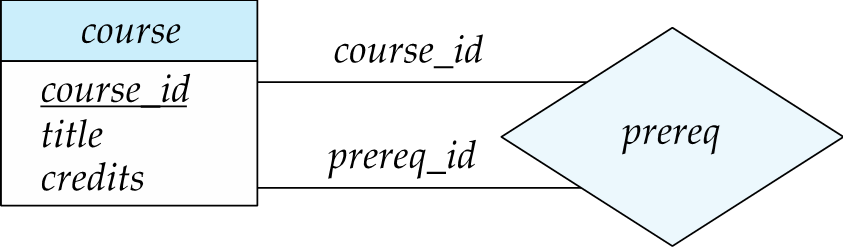
course_id 角色代表主课程, prereq_id 则表示修主课程前要求的先修课程
角色说明(Role indicator): 在联系线上写明该实体的角色
-
复杂属性的表示
-
属性的视觉标注规范
-
- 复合属性: 通过缩进来表示层级结构, 代表复合属性
-
- 多值属性: 花括号表示该属性可以有多个值
-
- 派生属性: 圆括号前的属性表示它是由其他字段推算出来的, 不需要显式存储在数据库中
-
-
-
例如:
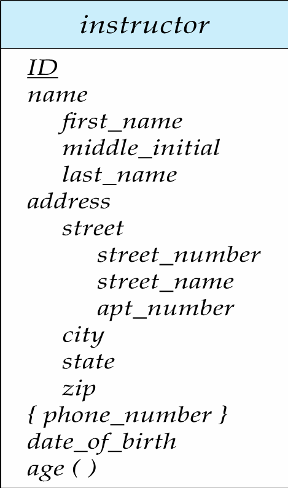
-
基数约束的表示
-
有箭头(\(\rightarrow\)): 表示
一; 其中, 箭头的方向代表了限制性, 箭头指向的一边表示1 -
无箭头(\(-\)): 表示
多图例: 分别为一对一, 一对多, 多对一, 多对多
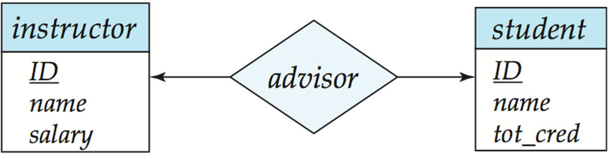
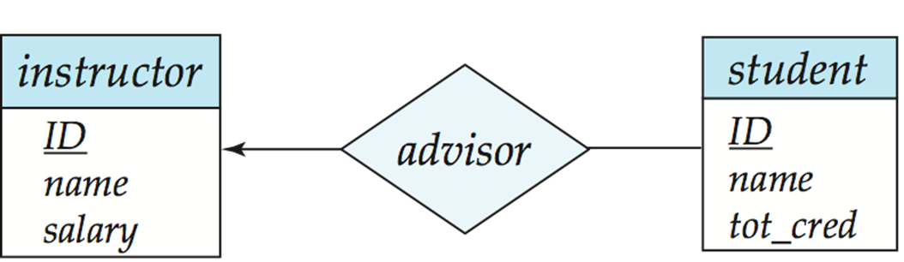
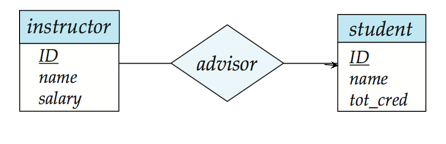
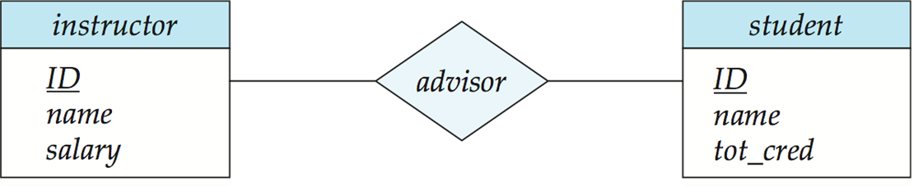
- 参与约束的表示
- 完全参与: 使用双实线表示
- 部分参与:使用单实线表示
- 复杂约束: 使用
l..h表示法, 其中l是下限,h是上限.1..1表示必须且只能有一个(等价于双线);0..*表示可以有 0 个或者多个
注: 关于基数约束和参与约束, 它们是独立的. 带箭头和不带箭头反映了基数, 而单线和双线反映了参与情况
- 弱实体集, 标识关系, 判别器
- 弱实体集: 双矩形
- 标识关系: 双菱形
- 分辨符: 使用虚线下划线
转换为关系模式
-
表示实体集
-
强实体集
直接转化为具有相同属性的模式. eg: studnet(ID, name, tot_cred)
-
弱实体集
除了自身的剩余属性/分辨符外, 还需要注意包含标识它的强实体集的主键. 同时创建外键约束, 并设置级联删除. eg: section(course_id, sec_id, sem, year)
注: 在 E-R 图中不画主键是为了简洁, 在物理连表的时候需要将其引用进来
-
处理具有复杂属性的实体集
- **复合属性:** 通过 `展平(Flattening)` 处理, 将每个子属性创建为一个单独的属性. eg: name $\rightarrow$first_name, middle_initial, last_name - **多值属性** - - 实体的多值属性由一个单独的 Schema 来表示 - - 模式中包含实体的主键以及多值的属性 - - 例子: 电话号码的对应, 用另外一个表存 ID 和电话号码, 同一个 ID 的多个值就存为多条元组 - **派生属性** 在表中不存储, 因为可以计算出来, 存了就会冗余 - **特殊情况——具有复杂属性的强实体集表示** 当一个实体除了主键外, 只有一个多值属性. 如果按照之前的方式处理, 为主键建立一个表, 为多值属性建立一个表, 那么就会很浪费. - - **优化:** 直接将多值属性拆开, 和主键一起写在一个表中 - - **易错点:** 这样处理后, 原本的主键可能会失去唯一性, 所以之前弱实体集的外键就会失去作用. 但是系统没有办法检查, 所以要靠程序逻辑或者触发器来维护数据一致性. -
表示关系集
-
多对多
- 多对多的关系集需要表示为一个模式
- 其属性包括: 参与关系的两个实体集的主键, 以及关系集自身的任何描述性属性
- 对于同名的主键, 可以进行重命名进行区分, 同是注意创建外键约束
- 多对一/一对多
- 这两种情况下不需要单独创建表来连接
- 将
1端的主键直接塞到N的一端做外键即可 - 例如: 一个部门有多个员工, 只需要在员工表中添加一列部门 ID, 就能减少很多连接操作
- 一对一
- 任何一边都可以存对方的主键作为外键
- 如果参与是部分参与(Partial), 将联系集合并到实体表中可能会导致大量的 NULL(空值)
- 对于弱实体集和属主强实体集之间的关系集是冗余的
- 这个关系集不需要单独建表. 直接将强实体集的主键写为其中的一列, 它和其他的分辨符一起组成了弱实体集的主键, 同时它还是一个外键.
扩展的 E-R 特性(扩展画法)
特化
-
特化(Specialization)——即数据库中的
继承:-
定义: 自顶向下(top-down)的设计过程, 在一个实体集中区分出具有独特特征的子小组, 这些子小组成为底层实体集, 它们继承其连接的所有高层实体集的属性和参与的联系, 标记为 ISA, 意思是: is a (是...)
-
E-R 图表示: 使用三角形组件表示, 其中尖端指向父类.
- 特性:
- 重叠(Overlapping): 一个人既可以是员工, 也可以是学生
- 不相交(Disjoint): 一个员工要么是导师, 要么是秘书, 不能兼为二者
- 全部与部分(Total and partial): 是否每个高层实体都必须属于某个底层实体
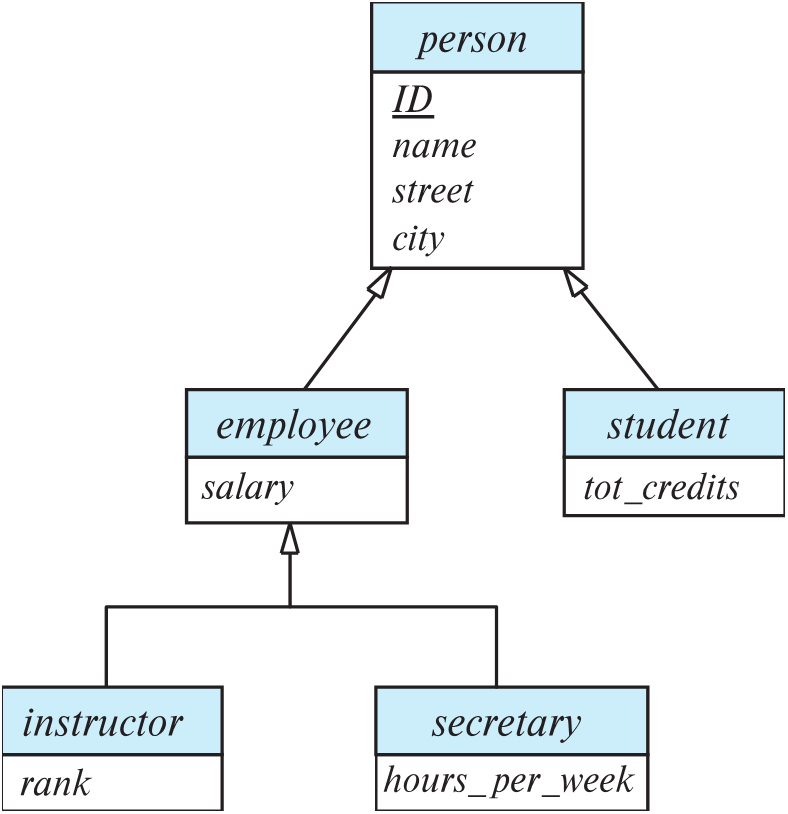
- 特性:
-
通过模式表示特化
-
方式一
为高层实体创建一个关系模式, 对于每个底层实体集, 分别为其创建模式, 其中包含高层实体集的主键和局部自己的局部属性
-
示例:
person(ID, name, street, city) student(ID, tot_cred) employee(ID, salary)
-
缺点
查询变慢了. 获取一个底层实体的完整信息需要访问两个关系, 这样的话需要两个 Table 去做一个 Join 后才能查到姓名.
-
优点
节省存储空间, 没有冗余
-
-
方式二
为每个实体集创建一个模式, 包含其所有的局部属性和继承属性
-
示例:
person(ID, name, street, city)
student(ID, name, street, city, tot_cred)
-
...
- 缺点 对于既是 student 又是 employee 的人, 它的姓名, 街道, 城市信息会被冗余存储 - 优点 查老师的姓名不需要 Join, 直接在 employee 表中查询就能找到 -
-
泛化
-
泛化(Generalization)
- 定义: 自底向上(bottom-up)的设计过程, 将具有相同特征的若干个实体集组合成一个更高层的实体集. 与特化是互逆的过程,
-
E-R 图表示: 也使用 ISA 三角形
-
E-R 图表示: 也使用 ISA 三角形
-
完整性约束(Completeness Constraint)
- 定义: 高层实体集中的实体是否必须属于泛化中的至少一个低层实体集
- 全部(total): 要求一个实体必须属于低层实体集之一
-
部分(partial): 要求一个实体不需要属于任何一个低层实体集
例子: 比如人可以分为男和女, 如果是 total, 那么这个人不是男就是女, 如果是 partial, 那么这个人还可能是性别不明
-
在 E-R 图中的表示
其中部分泛化是默认情况; 对于全部泛化, 采用在三角形旁边用虚线连接并添加关键字
total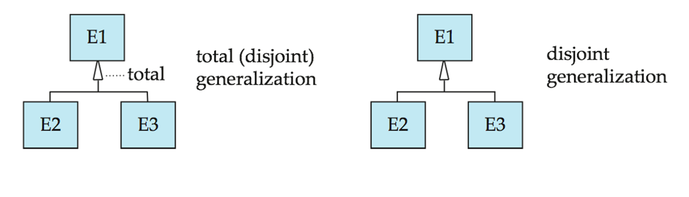
-
特化/泛化的设计约束
- 成员资格约束: 规定哪些实体可以成为给定低层实体集的成员
- 条件定义: 比如让超过 60 岁的人都是 senior-citizen 的成员
- 用户定义: 由用户手动指定
- 重叠约束: 规定一个实体是否可以属于同一泛化下的多个低层实体集
- 不相交: 一个实体只能属于一个子类. 在 E-R 图中表现为多个子类连接到同一个三角形
- 重叠: 一个实体可以属于多个子类.
- 成员资格约束: 规定哪些实体可以成为给定低层实体集的成员
-
关于特化和泛化, 还有以下特征:
- 一个实体集可以基于不同的特征有多个特化.
- ISA 关系也叫做超类-子类(superclass-subclass)关系
聚集
-
聚集(Aggregation)
-
问题: 如图所示, 对于之前的三元联系, 假设我们要记录'导师对学生在某个项目上的评价', 这种画法很复杂, 也很难体现出层次感.
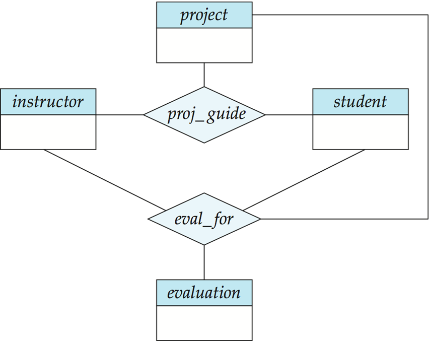
-
分析: 可以看到, 这里的两个关系集表达的信息是有重叠的. 但是有些项目不需要评估, 但是每个评估一定对应一个指导联系, 所以我们无法直接删除 proj_guide 关系. (只有当该三者的联系在 eval_for 中是完全参与时, 才可以删除)
-
解决方案: 通过聚集来消除这种冗余.
- - 将这里的关系看成一个抽象的实体 - - 允许关系和关系之间建立联系 简单理解: 就是将实体集和它们的关系打包, 当成一个整体实体来看待 -
E-R 图表示结果
这里的 eval_for 菱形不再连接三个实体, 而是连接整个框内的内容, 所以评价就是对整件事进行打分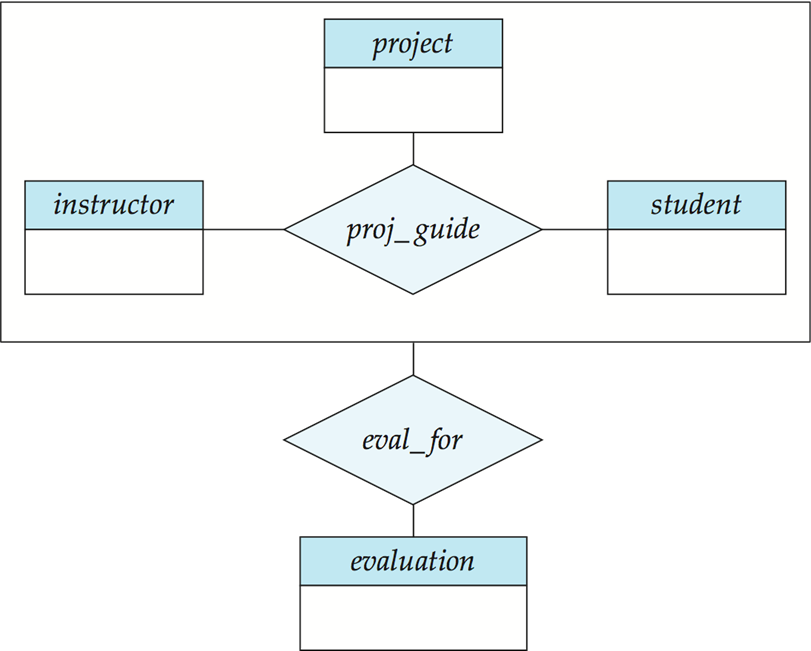
-
转换为关系模式
- - 包含被聚集联系的所有主键 - - 包含关联实体集的主键 - - 所有其他描述性属性 比如这里: eval_for(s_ID, project_id, i_ID, evaluation_id)
设计问题
E-R 图设计中常见的坑
E-R 图中常见的错误
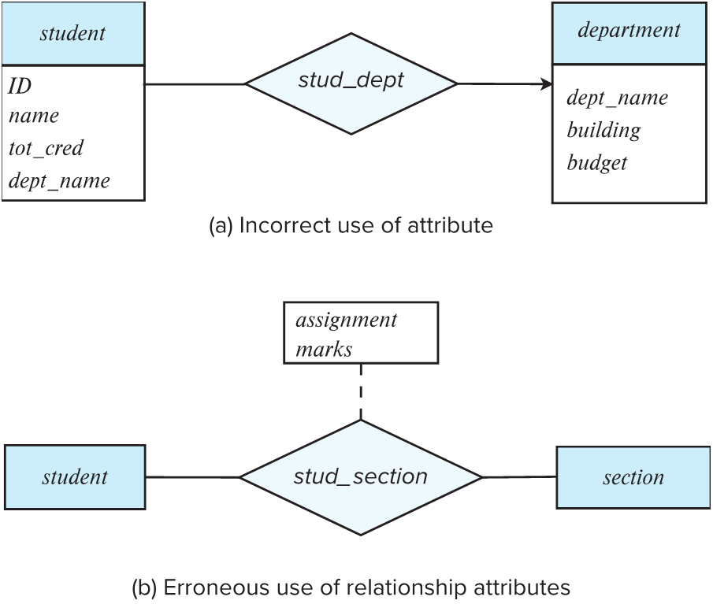
-
属性使用不当(Incorrect use of attribute)
-
错误点: 在 student 实体里写了 dept_name, 同时又画了一个 stud_dept 联系指向 department.
-
原因: 这造成了冗余. 既然有联系线, 就能查到系名, 不需要在学生属性里再写一遍.
-
关系属性使用错误(Erroneous use of relationship attributes)
-
错误点: 把成绩(marks)专门做成了一个实体 assignment.
-
原因: 成绩通常是学生和课程段之间的一个属性(描述联系的特征), 而不是一个独立存在的实体.
-
一种替代方案: 将 assignment 做成弱实体集, 它依赖于 section. 学生与这个作业之间建立 marks_in 联系, 并带有 marks 属性.
-
另一种替代方案: 直接在学生与课程段的联系 stud_section 上挂一个复合属性.
图示如下:
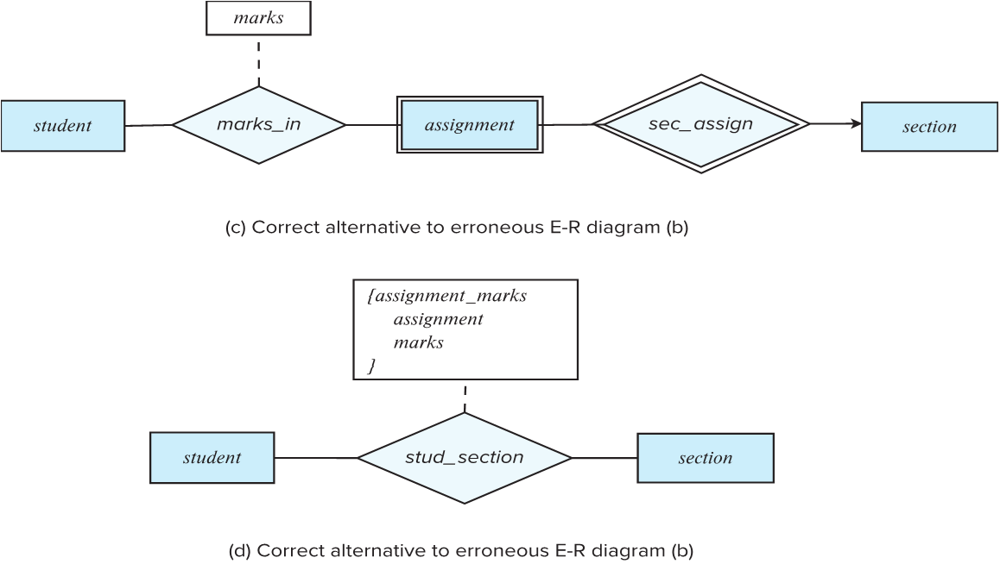
实体, 属性, 关系集的选择
- 实体可以记录一些额外信息, 并方便处理多个信息.
例如: 如果只是存一个电话号码, 那就用属性; 如果要存 xx 地点的电话号码, 或者一个人有多个电话号码, 那么就单独建立实体
- 联系集可以描述实体之间发生的动作. 一些位于'中间'的信息可以作为联系
例如: '注册'可以作为学生和学校的联系; 日期如果是具体到某个实体集的, 比如学生入学日期, 那么就放在学生表中; 如果是和其他表有联系的, 比如学生分配导师的日期, 那么就放在关系集里面.
二元联系和非二元联系
-
任何 n 元联系都可以替换为一组不同的二元联系
-
首先将非二元联系用一个人工实体集来代替, 然后再通过二元连线将参与者与之相连
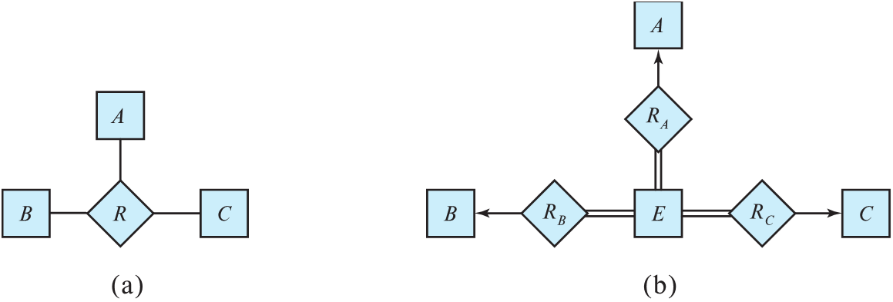
-
还需要转换约束, 完全转换所有约束可能无法实现, 所以可以将 E 设置为弱实体集, 由那三个联系集共同标识, 从而避免创建人工的标识属性.
-
二元联系在数据库物理实现中最简单, 三元联系画图省事, 但是会限制数据的灵活性, 比如二元联系能更好地允许部分信息的存在
UML
总结
- 处理实体
- 将实体集(包含强弱)转为关系模式, 将它们写成独立的表
- 处理关系
- 将关系集转为关系模式, 把多对多的联系变为中间表. 在这之后注意有些一对多的联系是否可以合并或者去掉?
- 去除冗余
- 合并
- 处理外键, 加上 foreign key 约束, 确保数据完整性